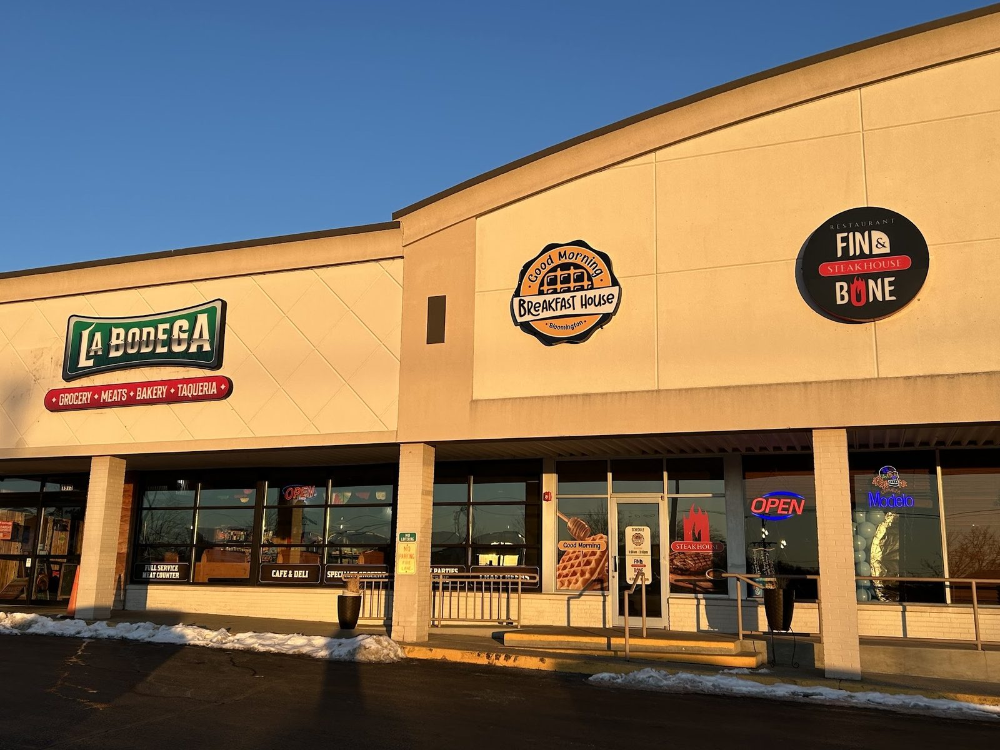

Tacos
Delicious and fast, with a Taco Tuesday deal.
Latin groceries, tacos, breakfast and a bakery with gluten free and vegan options.

Market, taqueria and bakery
Tacos, pastries and a full bakery case.
Delicious and fast, with a Taco Tuesday deal.

A case of desserts, with plenty of gluten free and vegan options.

Trays of fresh baked pastries and breads next to the groceries.


4.4 ★ · 325 Google reviews
⭐️⭐️⭐️⭐️⭐️ I can’t say enough good things about this place! As a Mexican myself, I can confidently say this is the real deal. The grocery selection is authentic, and the restaurant food is absolutely delicious. Every dish is bursting with flavor, this spot is truly Mexican-approved! Highly recommend for anyone looking for an authentic taste!
Got tacos for the first time and they were delicious! 8.99 on taco Tuesday. Best deal around. This will be my new taco spot. The desserts are amazing too. They have so many gluten free options. Good, clean store. Highly recommend.
We have loyal followers of this "brand" for years ...Wagon Wheel (current location) & Underground Cupcake (Ellettsville) that I fell in love with 15+ years ago for their NSA (monk fruit sweetened) cupcakes - and other goodies! Then they merged-> BBs Market (Butchers & Bakers). Ashley (their baker) did our wedding cake (No Sugar Added/monk fruit sweetened)- she is a genius! As a foodie, it was an ABSOLUTE delight to taste genache and SO many other exquisite flavors during our wedding cake tasting! Ashley is STILL there YEARS later creating masterpieces!!! What we consider "fully loaded"😂 but also Gluten free (my grandson!), vegan, both, all, etc!!! She is a bakery wizard!
Meet the crew
A 100% Latin American business bringing Latin products of quality, and in quantity.
Black shelves of colourful Latin products, a butcher-block lunch counter and a bakery case with gluten free, vegan and sugar free treats.